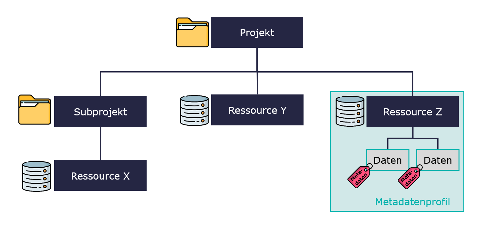
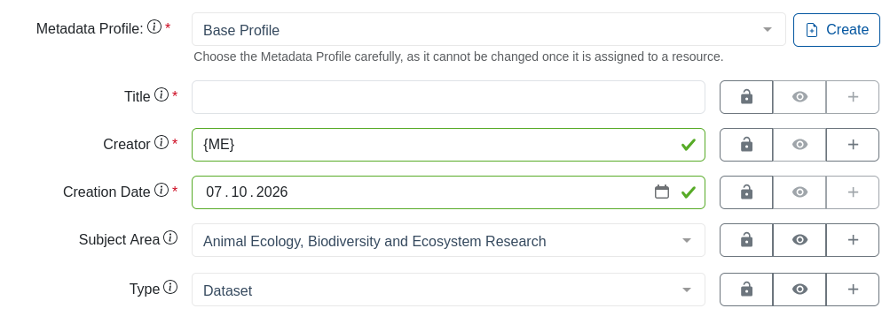
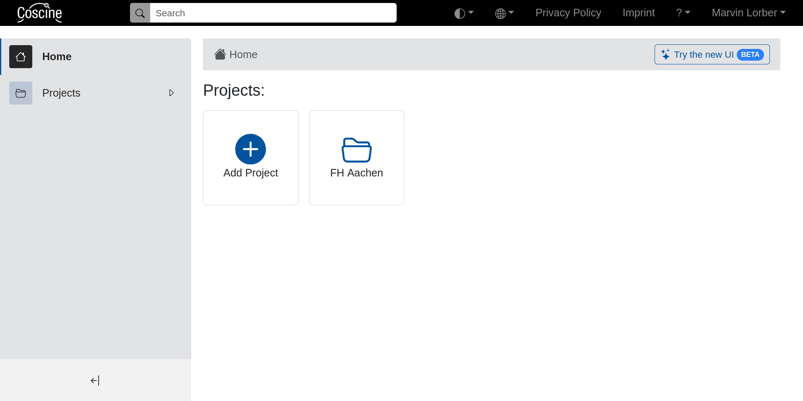
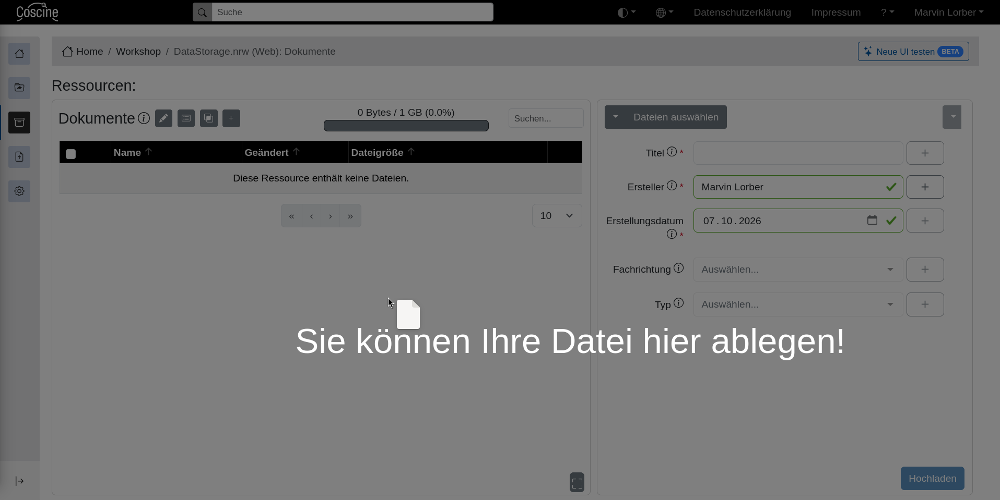
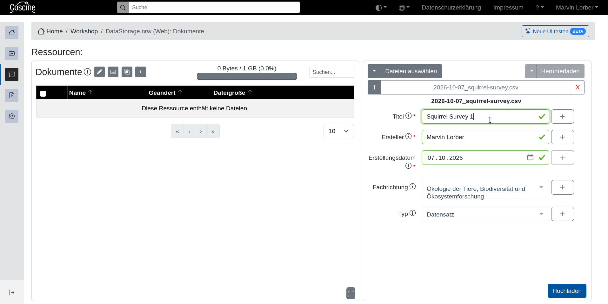

All in One View
Content from Einleitung
Last updated on 2026-10-08 | Edit this page
Estimated time: 10 minutes
Overview
Questions
- Was ist Coscine?
Objectives
- Erkläre den Zweck von Coscine
- Beschreibe die Struktur, in der Daten in Coscine gespeichert werden
Was ist Coscine?
Coscine ist eine Forschungsdatenmanagement-Plattform, die es ermöglicht, Daten im Sinne der FAIR Prinzipien (Findable, Accessible, Interoperable & Reusable) kostenlos für bis zu 10 Jahre nach Projektende zu speichern. Coscine greift auf den DataStorage.nrw zu - ein sehr sicherer Speicher, der an den vier Standorten Aachen, Duisburg-Essen, Köln und Paderborn betrieben wird. Seit 2018 wird Coscine an der RWTH Aachen entwickelt.
Die wichtigsten Funktionen
- Daten speichern: Pro Projekt können bis zu 125 TB Speicherplatz beantragt werden. 100 GB pro Projekt können Sie ohne einen Antrag nutzen.
- Daten beschreiben: Alle Daten müssen mit Metadaten (Informationen über die Daten) beschrieben werden, damit sie nachvollziehbar bleiben.
- (Meta-)Daten teilen: Metadaten können öffentlich sichtbar (innerhalb von Coscine) eingestellt werden. Die Daten selbst sind nicht frei zugänglich, können jedoch für ausgewählte Personen (z.B. Projektpartner:innen) zugänglich gemacht werden. Alle anderen können eine Anfrage per E-Mail versenden.
Die Struktur
- (Sub-)Projekte: Es können beliebig viele (Sub-)Projekte erstellt werden. Sie helfen dabei, den Überblick zu behalten. Vergleichen können Sie das mit der Ordnerstruktur auf Ihrem Computer.
- Ressourcen: Hier legen Sie fest, wie und wo Ihre Daten gespeichert werden. Es gibt 5 Ressourcentypen die im Kapitel “Ressourcen und Metadatenprofile” genauer beschrieben werden.
- Metadatenprofil: Ein Metadatenprofil ist immer an eine Ressource gebunden. Es gibt den Rahmen vor, mit welchen Informationen die Daten beschrieben werden, z.B. Erhebungsdatum, Erhebungsmethode.
Jede Ressource muss immer genau ein Metadatenprofil haben. In der folgenden Abbildung wurde das Profil zur besseren Übersicht nur für eine Resource dargestellt.

Ein Metadatenprofil legt fest welche Informationen unter welchem Namen zu einer Datei gespeichert werden. Hier Beispielhaft das “Base Profile”:

Content from Login und Profil
Last updated on 2026-10-08 | Edit this page
Estimated time: 15 minutes
Overview
Questions
- Welche Möglichkeiten zum Login gibt es?
Objectives
- Nutzen Sie die verschiedenen Methoden zum Login
- Verknüpfen Sie alle Zugänge mit dem selben Account
Login-Möglichkeiten
- Per Login (All Institutions): Steht Coscine an Ihrer Hochschule zur Verfügung, können Sie sich mit Ihren Institutions-Anmeldedaten anmelden. Diese verfallen nach Beschäftigungsende. Deshalb sollten Sie Ihr Konto mit einer ORCiD verknüpfen, um dauerhaft auf Ihre Projekte zugreifen zu können.
- Per ORCiD: Die ORCiD ist eine eindeutige, digitale Identifikation für Forschende. Eine ORCiD besteht aus einem 16-stelligen numerischen Code. Der Login mit der ORCiD ist jederzeit möglich.
Falls Sie noch nicht registriert sind, legen Sie sich mit nur wenigen Klicks eine ORCiD an.
Nach dem Login landen Sie auf ihrer persönlichen Startseite:

Nach dem Login ist ein guter Zeitpunkt auf die Teilnehmer / Fragen zu warten und um auf die Mail-Verification für neue Accounts hinzuweisen.
Profileinstellungen
Die Profileinstellungen finden Sie unter [Ihr Name] > “Nutzendenprofil” am oberen rechten Rand.
| Persönliche Angaben | Titel, Vorname, Familienname, E-Mail, Organisation, Disziplin (vgl. Spalte „Fachkollegium“ der DFG-Fachsystematik) |
| Zugriffstoken erstellen | Ermöglicht den automatisierten Zugriff auf alle Projekte und Dateien über die API. Mehr dazu in der Coscine Dokumentation. |
| Nutzendenpräferenzen | Einstellung der bevorzugten Sprache (deutsch oder englisch) und Benachrichtigungen |
| Verbundene Accounts | Verknüpfung des Kontos mit anderen Accounts (z.B. ORCiD) |
Der erste Login mit einer Login-Möglichkeit erzeugt einen neuen Account! Zur besseren Übersicht und damit Sie weiter Zugriff auf ihre Projekte haben, auch wenn Sie eine Institution verlassen, sollten Sie alle ihre Accounts miteinander verknüpfen.
Challenge
Falls Speicherplatzressourcen an Ihrer Institution verfügbar sind:
- Melden Sie sich bei Coscine an. Nutzen Sie den Login (All Institutions).
- Öffnen Sie Ihr Profil und vervollständigen Sie die fehlenden Informationen.
Falls Speicherplatzressourcen an Ihrer Institution nicht verfügbar sind:
- Login ist mit institutionellem Account oder ORCiD möglich
- Verschiedene Login-Methoden erzeugen separate Accounts die verknüpft werden sollten
- Kontoeinstellungen sind unter dem eigenen Namen oben rechts zu finden
Content from Projekte und Unterprojekte
Last updated on 2026-10-08 | Edit this page
Estimated time: 20 minutes
Overview
Questions
- Was sind Projekte in Coscine?
Objectives
- Legen Sie ein Projekt in Coscine an
- Beschreiben Sie das Projekt mit den richtigen Metadaten
Projekte und Unterprojekte
Projekte sind sozusagen die Ordner, in denen später sogenannte Ressourcen und darin Ihre Daten gespeichert sind. In einem Projekt können auch mehrere Subprojekte vorhanden sein. Damit verständlich ist, um welches Projekt es sich handelt, müssen Sie beim Erstellen verschiedene Informationen angeben:
| Projektname | Name des Projektes |
| Anzeigename | Kurztitel des Projektes |
| Projektbeschreibung | Kurze Erläuterung des Projektinhaltes |
| Principal Investigators (PI) | Projektleiter:innen |
| Projektstart | Start des Projektes |
| Projektende | (Voraussichtliches) Projektende |
| Disziplin | Entspricht der DFG-Fachsystematik (Mehrfachauswahl möglich) |
| Teilnehmende Organisationen | Verfügbare Organisationen basieren auf ROR IDs. Falls die Organisation nicht gelistet ist, kann sie manuell eingegeben werden. |
| Projektschlagwörter | Zur besseren Einordnung und Auffindbarkeit des Projektes |
| Sichtbarkeit der Metadaten | Public heißt: alle Nutzenden können die (Meta-)Daten in Coscine finden. Kein Zugriff auf die Daten. Anfrage zum Teilen der Daten möglich. |
| GrantID | Fördernummer des Projektes (falls vorhanden) |
Challenge
Sie sind PI und Datenmanager:in für das unten Beschriebene Projekt und wollen die anfallenden Daten In Coscine speichern. Legen sie das Projekt in Coscine an. Bitte wählen Sie bei “Sichtbarkeit der Metadaten” “Project Members” damit das Testprojekt nicht in der allgemeinen Suche auftaucht. Dies wird im Kapitel “Dateien Suchen” genauer erklärt.
Titel: Das Tauben-Parlament – Beobachtungen zu demokratischen Entscheidungsprozessen in städtischen Taubenschwärmen
Kurzbeschreibung: Seit Jahrhunderten versammeln sich Tauben auf Plätzen, Dächern und Brücken – und entscheiden gemeinsam: Wo wird gefressen? Wann wird geflogen? Wer bekommt den besten Krümel? Dieses Projekt dokumentiert über 12 Monate die „Abstimmungsrituale” eines Taubenschwarms auf dem Marktplatz von Musterstadt. Mithilfe von Zeitraffer-Videos, Audioaufnahmen der „Parlamentsdebatten” (Gurren, Schnattern, Flügelschlagen), GPS-Tracking der Individuen und systematischen Beobachtungsprotokollen soll herausgefunden werden, ob Taubenschwärme tatsächlich konsensorientiert oder eher nach dem Prinzip „der Lauteste gewinnt” funktionieren.
Laufzeit: 12 Monate Ort: Marktplatz Musterstadt (3 Standorte: Brunnen, Rathausdach, Bäckereiterrasse) Förderkennzeichen: TAU-BE100
Es können mehrere Disziplinen angegeben werden. Bei Interdisziplinären Projekten macht es Sinn alle Disziplinen anzugeben.
Challenge
Die Daten der verschiedenen Beobachtungsstandorte sollen zuerst getrennt voneinander gesammelt und analysiert werden. Legen Sie jeweils ein Unterprojekt für jeden Standort an
- Projekte und Unterprojekte funktionieren ähnlich wie Ordner
- Projekte sollten sorgfältig mit Metadaten beschreiben werden um Auffindbar zu bleiben
Content from Ressourcen und Metadatenprofile
Last updated on 2026-10-08 | Edit this page
Estimated time: 20 minutes
Overview
Questions
- Wie werden Ressourcen erstellt?
Objectives
- Legen Sie eine Resource an
- Wählen und befüllen Sie ein Metadatenschema
Schritt 1: Ressourcentyp festlegen
Mit dem Ressourcentyp legen Sie fest, wo Ihre Daten gespeichert sein sollen. So gibt es z.B. die Möglichkeit, Daten über Coscine auf dem DataStorage.nrw zu speichern oder nur einen Datensatz zu verlinken, der bereits an einem anderen Ort gespeichert ist (z.B. GitLab).
| Web | Web-Ressource des Datastorage.nrw. Bis zu 100 GB Speicherplatz ist kein Antrag erforderlich. Auf Antrag auch mehr Speicherplatz möglich. Zugriff nur über Webinterface oder API. Dies ist der “Standard” Ressourcentyp wenn Ihre Daten in Coscine gespeichert werden. |
| S3 | S3-Ressource des Datastorage.nrw. Für die S3-Ressource muss ein Antrag gestellt werden. Es sind bis zu 125 TB Speicherplatz pro Speicherplatz-Antrag möglich. Zugriff erfolgt über Webinterface, API oder S3-Client. |
| WORM | WORM-Ressource des Datastorage.nrw für besonders vor Manipulation zu schützende Daten. Daten können nach dem Speichern nicht mehr gelöscht oder verändert werden (Write Once Read Many). Für die WORM-Ressource muss ein Antrag gestellt werden. Es sind bis zu 125 TB Speicherplatz möglich. Dieser Typ ist nur in Sonderfällen relevant. Beraten Sie sich mit ihrem lokalen Coscine Support wenn Sie überlegen eine WORM Ressource zu beantragen. |
| GitLab | Sie können ein GitLab-Projekt mit Coscine verknüpfen und so alle Dateien, die im GitLab Projekt liegen, in Coscine mit Metadaten beschreiben. Die Daten verbleiben weiterhin in GitLab, die Metadaten werden in Coscine gespeichert. Da bei dieser Resource die Daten selbst nicht in Coscine gespeichert werden kann sie auch genutzt werden wenn Sie nicht Teil einer Institution sind, die Speicher in Coscine zur Verfügung stellt. |
| Linked Data | Sie können Dateien, die an einem anderen Speicherort liegen, mit einem persistenten Link in Coscine verknüpfen und dort die Dateien mit Metadaten beschreiben. Auch hier bleiben die Daten am ursprünglichen Speicherort. Da bei dieser Resource die Daten selbst nicht in Coscine gespeichert werden kann sie auch genutzt werden wenn Sie nicht Teil einer Institution sind, die Speicher in Coscine zur Verfügung stellt. |
Schritt 2: Metadatenprofil festlegen
Im zweiten Schritt wählen Sie ein Metadatenprofil. Dies bestimmt die Eingabefelder für die Metadaten (z.B. Ersteller:in, Erhebungsmethode, Datentyp, Lizenz…). Einige Profile und Standards sind in Coscine bereits vorgegeben (z.B. BASE oder EngMeta). Wenn Sie kein passendes Profil für Ihre Daten finden, dann können Sie auch ein eigenes erstellen und beantragen.
Das ausgewählte Metadatenprofil kann im Nachgang nicht mehr geändert werden. Wenn Sie das Profil später wechseln wollen müssen Sie die Resource löschen und von vorne beginnen. Es lohnt sich also, sorgfältig zu planen!
Schritt 3: Ressourcenmetadaten ausfüllen
Im letzten Schritt müssen Sie nun noch ein paar Informationen über die Ressource eingeben:
| Ressourcenname | Eindeutiger Name der Ressource |
| Anzeigename | Kurzer Anzeigename der Ressource |
| Ressourcenbeschreibung | Beschreibung von Inhalt und Zweck der Ressource |
| Disziplin | Entspricht der DFG-Fachsystematik (Mehrfachauswahl möglich) |
| Projektschlagwörter | Zur besseren Einordnung und Suchbarkeit der Ressource |
| Sichtbarkeit | Bei der Einstellung „public“ können alle Nutzenden von Coscine die (Meta-)Daten finden. Sie haben keinen Zugriff auf die Daten selbst, können Sie jedoch bei Interesse kontaktieren. |
| Lizenz | Für alle Dateien der Ressource kann eine Lizenz ausgewählt werden. Für Forschungsdaten werden die Creative Commons Lizenzen (CC-Lizenzen) empfohlen. Weitere Infos finden Sie auf forschungsdaten.info. |
| Interne Regeln zur Nachnutzung | Besondere Regeln und Informationen zur Nachnutzung der Dateien innerhalb der Organisation (z.B. Wie soll mit den Daten umgegangen werden, wenn der/die Projektleiter:in nicht mehr da ist?) |
Challenge
Die bisher angelegten Projekte und Unterprojekte bieten nur die Struktur. Legen Sie nun die Ressourcen an, in die Ihr Beobachtungsteam die erhobenen Daten einpflegen kann.
Falls Speicherplatzressourcen an Ihrer Institution verfügbar sind:
- Wählen Sie für ihre Ressourcen den Typ „Web“.
Falls Speicherplatzressourcen an Ihrer Institution nicht verfügbar sind:
- Wählen Sie für ihre Ressourcen den Typ „Linked Data“.
Wenn Sie auf die schnelle kein besseres Profil finden können Sie für alle Ressourcen das “Basisprofil” nutzen
Die richtige Anzahl an Ressourcen für ein Projekt zu finden kann eine Kunst für sich sein. Da jeden Ressource nur genau ein Profil haben kann, macht es unter Umständen Sinn für jeden Datentyp (Audio, Video, Text, etc.) eine eigene Resource mit einem entsprechend detaillierten Profil anzulegen. Für dieses Testprojekt sollte pro Unterprojekt eine Ressource für alle Rohdaten ausreichen
- Es gibt 5 Ressourcentypen, die wichtigsten sind:
- Web: “Standard” für Daten in Coscine
- S3: Kompatibel mit dem S3-Standard, nur auf Antrag erhältlich
- Linked Data: Externe Daten für die nur Metadaten in Coscine gespeichert werden
- Jede Ressource ist fest mit einem Metadatenprofil verknüpft
- Metadatenprofile können aus einer Liste ausgewählt, oder (mit etwas Vorlauf) neu vorgeschlagen werden
Content from Dateiupload, -download und -löschung
Last updated on 2026-10-08 | Edit this page
Estimated time: 2 minutes
Overview
Questions
- Wie kann ich Dateien in Coscine verwalten?
Objectives
- Führen Sie die folgenden Dateioperationen mit der Weboberfläche
durch:
- Hochladen
- Herunterladen
- Löschen
- Filtern
Upload
Sofern Sie eine “Web” Ressource erstellt haben, können Sie nun Daten über Coscine hochladen. Sie können entweder einzelne Dateien hochladen oder auch mehrere Dateien auf einmal. Ziehen Sie die Dateien einfach in die Weboberfläche von Coscine oder laden Sie die Dateien über die Buttons “Datei auswählen” und “Hochladen” hoch. Sobald Sie Ihre Daten ausgewählt haben, müssen Sie diese rechts mit Metadaten beschreiben. Danach können Sie die Daten final hochladen.


Wenn Sie eine “Linked Data” Ressource erstellt haben, können Sie keine Daten direkt in Coscine hochladen. Stattdessen verlinken Sie Daten, die in einer anderen Speicherumgebung gespeichert sind. Anschließend beschreiben Sie diese mit Metadaten. Nur die Metadaten sind nun in Coscine hinterlegt. Neben diesen beiden Varianten besteht auch die Möglichkeit, Daten automatisiert über die API hochzuladen oder über den S3-Client, wenn Sie eine S3-Ressource gewählt haben. Weitere Informationen zur API und zu S3-Clients finden Sie in der Coscine-Dokumentation.
Download und Löschen
Beim Download gilt das Gleiche wie beim Upload: Da die Daten bei der “Linked Data” Ressource extern gespeichert sind, können die Daten nicht in Coscine heruntergeladen werden. Inhalte von “Web”, “S3”, und “WORM”-Ressourcen können Sie hingegen herunterladen, indem Sie die gewünschten Daten über die Checkbox markieren, anschließend “Alle Dateien” auswählen und anschließend rechts auf “Herunterladen” klicken.
Um Daten einer “Web” Ressource zu löschen, klicken Sie nach der Auswahl auf den Pfeil neben “Herunterladen”, anschließend auf “Alle Dateien” und dann auf “Löschen”. Bei Inhalten einer “Linked Data” Ressource gehen sie identisch vor. Allerdings entfernen Sie nicht den Datensatz (da sich dieser an einem externen Speicherort befindet), sondern nur die Verlinkung und die zugehörigen Metadaten.
Gelöschte Inhalte können nicht selbständig wieder hergestellt werden.
Filtern
Über das Filtersymbol können Sie festlegen, welche Metadatenfelder in der Auflistung angezeigt werden sollen. Über die Suchleiste oberhalb der Liste können Sie nach Schlagwörtern suchen. Dies ist nützlich, wenn Sie beispielsweise alle Daten sehen möchten, die z.B. mit einer bestimmten Methode erhoben wurden. Dies setzt natürlich voraus, dass die Metadaten konsistent dokumentiert wurden.
Challenge
Ihr Feldteam hat den ersten Tag an Beobachtungen abgeschlossen und Ihnen die Ergebnisse geschickt. Erstellen Sie (leere) Dateien mit den folgenden Namen und laden Sie sie in die richtige Ressourcen hoch. (Falls Sie eine Linked Data Ressource erstellt haben: erstellen Sie stattdessen Verweise auf die Dateinamen.) Denken Sie sich dabei die Namen der Ersteller aus.
# Beobachtungen
- obs_2025-01-15_brunnen.csv
- obs_2025-01-15_rathausdach.csv
- obs_2025-01-15_baeckerei.csv
# Audio
- gurr_debatte_2025-01-15_0930_brunnen.mp3
- gurr_debatte_2025-01-15_1415_rathausdach.mp3
# Video
- zeitraffer_brunnen_2025-01-15.mp4
# Fotos
- kruemel_karte_baeckerei_001.jpg- Beim Upload müssen die Metadaten einer Datei angegeben werden
- Gelöschte Dateien können nicht selbständig wiederhergestellt werden
- Über Suche und Filter kann nach Dateien mit bestimmten Metadaten gesucht werden
Content from Dateien Suchen
Last updated on 2026-10-08 | Edit this page
Estimated time: 4 minutes
Overview
Questions
- Wie kann nach Datensätzen gesucht werden?
Objectives
- Suchen Sie Daten anhand von Schlagwörtern und Metadaten
Über die Suchfunktion können Dateien, Ressourcen und Projekte mithilfe der Metadaten gefunden werden. Dies setzt voraus, dass die Metadaten “public” sind. Wenn Metadaten “privat” sind, müssen Sie Mitglied des Projekts sein, um Daten aus dem Projekt finden zu können.
Der Zugriff auf die Ergebnisse ist nur möglich, wenn Sie Mitglied des Projektes sind. Alle anderen haben keinen Zugriff auf die Daten selbst und sehen nur die Metadaten.
Die Daten können erst 24 Stunden nach Upload in Coscine gefunden werden, da sich das System in diesem Rhythmus aktualisiert.
Challenge
Testen Sie die Suchfunktion mit Schlagwörtern Ihrer Wahl.
- Wenn ihr Projekt “public” ist können die Metadaten von allen Nutzenden mit der Suche gefunden werden
- Die Daten selbst sind nur für Mitglieder des Projekts sichtbar
- Der Suchindex wird alle 24 Stunden aktualisiert, neue Projekte und Dateien können daher nicht sofort gefunden werden
Content from Zugriffsrechte verwalten
Last updated on 2026-10-08 | Edit this page
Estimated time: 5 minutes
Overview
Questions
- Wie können einen Projekte andere Personen hinzugefügt werden?
- Wie funktioniert das Rechtesystem in Coscine?
Objectives
- Fügen Sie ihrem Projekt andere Personen mit verschieden Rollen hinzu
Es gibt zwei Möglichkeiten Personen zu einem Projekt hinzuzufügen:
- Navigieren Sie in der Projektübersicht zur “Mitgliederverwaltung”. Per E-Mail-Adresse können Sie Personen hinzufügen. Mitglieder der Institution sind bereits im System erfasst und können einfach per Namen gesucht werden. Auch externe Personen können eingeladen werden. Diese benötigen für den Login eine ORCiD. Anschließend können sie über die im Profil hinterlegte E-Mail-Adresse eingeladen werden.
- Übertragen Sie Mitgliederlisten aus anderen Projekten. Klicken Sie hierfür in der Mitgliederverwaltung auf “Importieren”. Wählen Sie das entsprechende Projekt aus, dessen Mitglieder Sie übertragen möchten. Anschließend können Sie die Liste bearbeiten und Personen entfernen.
Eingeladene Personen können verschiedene Rollen im Projekt besitzen:
- Owner haben administrative Rechte für das Projekt und besitzen Lese- und Schreibrechte für die Daten, d.h. Sie können die Daten sowohl ansehen als auch bearbeiten.
- Member haben keine administrativen Rechte. Sie haben jedoch Lese- und Schreibrechte.
- Guests haben nur das Recht, Daten anzusehen. Sie besitzen weder administrative Rechte noch Schreibrechte.
Challenge
Bilden Sie Gruppen und laden Sie sich gegenseitig als “Gast” in ihre Projekte ein. Welche Ressourcen können sie in den anderen Projekten sehen? Schauen Sie sich an welche Optionen Sie als Gast in einem Projekt haben haben.
Challenge
Sie möchten, dass Ihr Feldteam die erhobenen Daten der nächsten Tage nicht erst an Sie schickt sondern direkt in Coscine hochläd. Gleichzeitig wollen Sie sicherstellen, dass niemand versehentlich die Daten eines anderes Teams überschreibt. Die Personen jedes Teams arbeiten die gesamte Projektlaufzeit nur ein einem Beobachtungsstandort. Kann dieser Plan in Coscine umgesetzt werden? Wenn ja: Wie muss das Projekt konfiguriert werden?
Dieser Plan kann umgesetzt werden, indem alle Teammitglieder dem Hauptprojekt nur als “Gast” hinzugefügt werden und dann dem Unterprojekt ihres Standortes als “Member”. Auf diese Weise können alle im Team alle Daten einsehen, aber nur in ihre “eigenen” Ressourcen schreiben.
Wenn der Lesezugriff für das ganze Team nicht wichtig ist, kann der Gastzugriff auf das Hauptprojekt auch entfallen.
- Projektmitglieder können aus anderen Projekten importiert und einzeln hinzugefügt werden
- Es gibt ein Rollensystem mit verschiedenen Rechten (Owner, Member, Guest)
- Mitglieder und Rollen werden an Unterprojekte weitergegeben